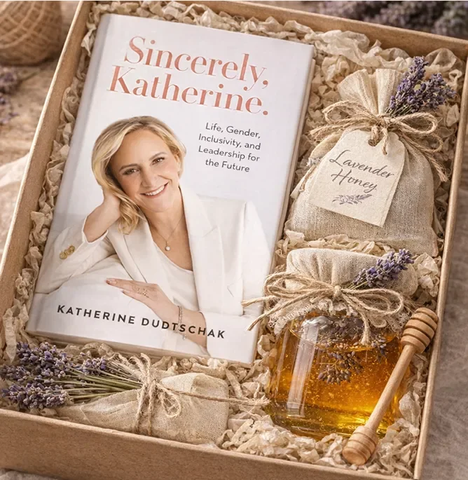

Signed hardcover
A limited edition, signed and inscribed by Katherine.
Concept preview of a new website for Sincerely. The live site is sincerelyinc.com.
The memoir by Katherine Dudtschak
Life, gender, inclusivity and leadership for the future. The book that began it all, and a love letter to humanity.
It is one woman's honest account of finding her way home to herself while leading at the highest levels of corporate life.
It is a story of secrets kept and finally told. Of a life built on achievement and nearly lost to silence. Of transformation that began with terror and ended with standing ovations. Of grief that cracked everything open, and the wholeness that emerged from the breaking.
It is Katherine's story. And it is, perhaps, a mirror for your own.
Part one
A child on a farm, carrying a secret she couldn't name. A determined climber, building a life that looked right but felt wrong. A woman who, after fifty years, chose truth over safety.
Part two
What decades in leadership taught her. How organizations can become places of belonging. Why the world's outer crises mirror our inner imbalance, and what it means to lead from wholeness instead of fear.
Part three
Not an ending but an opening. The life that becomes possible when we stop performing and start being, and an invitation to your own becoming.
From the pages
It is quite simple: nothing that is meant for you will ever get away. Love deeply, and without the need to possess or own. And I promise, I promise: the right things will stay.
Signed copies come from the farm. A portion of the proceeds supports the Sincerely Foundation.
A limited edition, signed and inscribed by Katherine.

The full memoir, easy to carry and to pass on.
For reading tonight, wherever you are.

The signed hardcover with lavender honey from Maison Millefleurs.
“One of the most sacred experiences a human being can navigate during their lifetime is a deep communion with their true self. This is far from an easy task. Katherine Dudtschak is a shining example of courage and authenticity as she redefined the notion of true leadership along the way in both her personal and professional life. Her story might not be yours, but don't be fooled, its lessons are universally ours.”
Sophie Grégoire Trudeau, global speaker and bestselling author of Closer Together
“This book is a tender and transformative contribution to a more compassionate world.”
Dr. Robyne Hanley-Dafoe, author of Calm Within the Storm and Stress Wisely
“She shares her life experiences so that others can gain a deeper understanding that while there may be differences among us, together we can move toward a brighter future based on kindness, inclusivity, and positive change.”
Phil Fontaine, former National Chief of the Assembly of First Nations
“Katherine's story is a triumph of courage, authenticity and love.”
Colleen Johnston, philanthropist and former CFO of TD Bank
“I highly recommend Sincerely, Katherine. for not only Katherine's generous sharing of her experience, but also her reflections on how inclusive leadership can have a fundamental impact on individuals, organizations, and society.”
Anthony Ostler, President and CEO, Canadian Bankers Association
“The prose is direct, empathetic, and unflinching.”
Foreword Clarion Reviews
“Katherine powerfully and elegantly cuts through delusions and gently uses her genius to engage us into a new state of thought.”
Patricia K Gagic, international artist and author
This book was written to be shared. A discussion guide is available for book clubs, leadership circles and gatherings of friends. For groups of ten or more, Katherine may be able to join you virtually.
Members of the press are welcome to request review copies, interviews and background materials about the book and about Katherine.